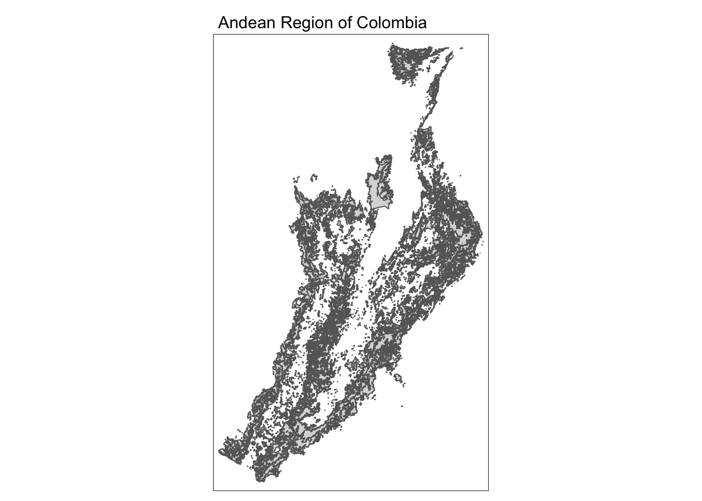
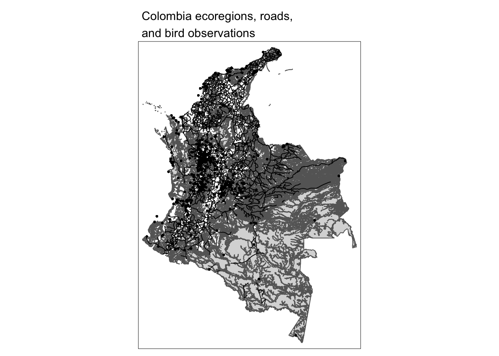

library(here)
library(tidyverse)
library(stars)
library(sf)
library(tmap)Read in Vector Data
col <- st_read(here::here("data", "week2-discussion", "Colombia", "Colombia.shp"))
roads <- st_read(here::here("data", "week2-discussion", "RDLINE_colombia", "RDLINE_colombia.shp"))
aves <- readr::read_csv(here::here("data", "week2-discussion", "dataves.csv")) %>%
dplyr::as_tibble() %>%
dplyr::rename(long = decimal_longitude) %>%
dplyr::mutate(lat = decimal_latitude) %>%
st_as_sf(coords = c("long", "lat"), crs = 4326)Check Class and Geometry Type
class(col)
class(roads)
class(aves)unique(st_geometry_type(col))
unique(st_geometry_type(roads))
unique(st_geometry_type(aves))Select Macro Region of Interest
col_andean <- col %>%
# Set categorical "levels" in attribute N1_MacroBi (subregions of Colombia)
dplyr::mutate(N1_MacroBi = as.factor(N1_MacroBi)) %>%
# Subset to Andean region of Colombia
dplyr::filter(N1_MacroBi == "Andean")tm_shape(col_andean) +
tm_polygons() +
tm_layout(main.title = "Andean Region of Colombia",
main.title.size = 1)
Play with Coordinate Reference System
# Print the CRS of each spatial object
st_crs(col)
st_crs(roads)
st_crs(aves)
# Print units of each CRS
st_crs(col)$units
st_crs(roads)$units
st_crs(aves)$unitsThere are several ways to extract the longitude and latitude from the geometry column.
purr Approach
aves_df_purrr <- aves %>%
# Extract lat & long from geometry column
mutate(lon = unlist(purrr::map(aves$geometry, 1)), # longitude = first component (x)
lat = unlist(purrr::map(aves$geometry, 2))) %>% # latitude = second component (y)
st_drop_geometry() # Remove geometry column now that it's redundantst_coordinates Approach
aves_df_st_coords <- aves %>%
dplyr::mutate(lon = sf::st_coordinates(.)[,1],# Assign first matrix item to "lon"
lat = sf::st_coordinates(.)[,2]) %>% # Assign second matrix item to "lat"
st_drop_geometry() # Remove geometry column now that it's redundantNext, convert to sf object again.
st_as_sf Approach
aves_df_purrr <- aves %>%
st_as_sf(coords = c("lon", "lat"), crs = 4326)Bring All Vector Data Types Together
# Boolen check if CRS match between 2 datasets
st_crs(col) == st_crs(roads)
# Transform bird data into same CRS as other Colombia data
aves <- st_transform(aves, crs = st_crs(col))# Simple plot with all 3 data layers
tm_shape(col) +
tm_polygons() +
tm_shape(roads) +
tm_lines() +
tm_shape(aves) +
tm_dots() +
tm_layout(main.title = "Colombia ecoregions, roads,\nand bird observations",
main.title.size = 1)